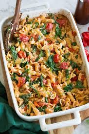

Feta Pasta
Description
If you are looking for an easy yet
delicious two dish pasta recipe you are on
right page! This recipe requires noodles, feta
cheese, cherry tomatoes, and basil and comes
together in as little as 20 minutes!
Ingredients
- 16 oz of cherry tomatoes
- 8 oz block of feta cheese
- 12 oz of dried pasta (any type you want,
I prefer penne)
- Basil
- Salt and Pepper to taste
- Olive Oil
Steps
- Preheat your oven to 400 degrees fahrenheit and
set a pot of water on the stove to boil.
- In a oven safe baking pan mix your tomatoes
with a bit of olive oil, then place your feta
block in the middle. Place this in the oven when
it's up to temperature.
- Let tomatoes cook until they burst, cook noodles
by package instruction while waiting
- Once tomatos and feta are done remove from the oven
and mix well. Add salt, pepper, and fresh, chopped
basil to taste at this time.
- Add noodles to the tomato and feta sauce in the baking dish
- Mix and Enjoy!
Home